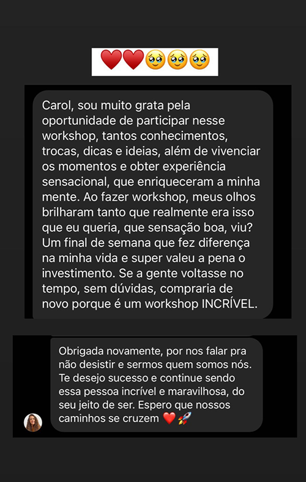
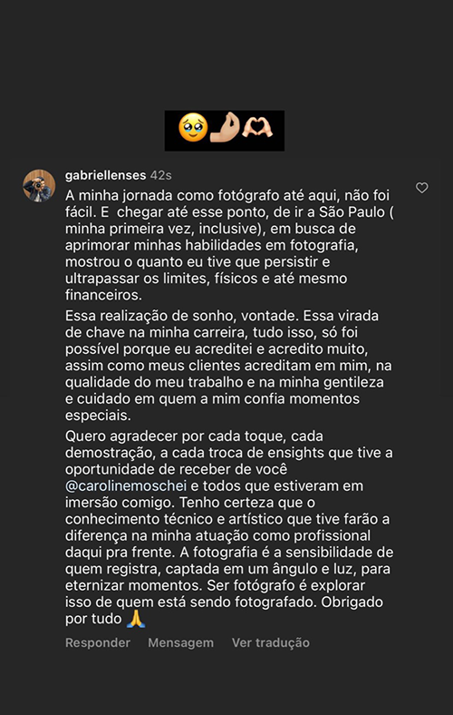
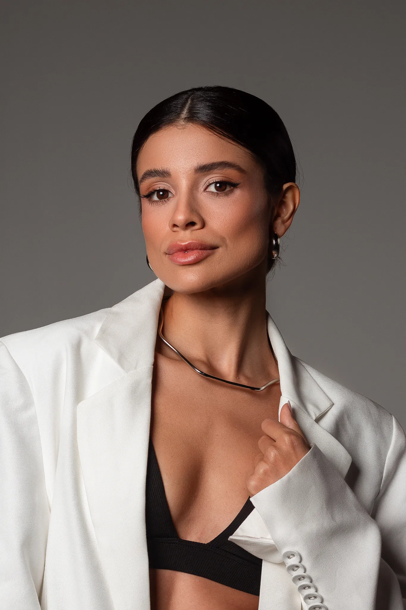
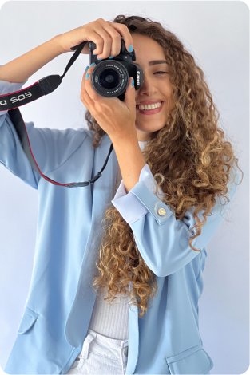
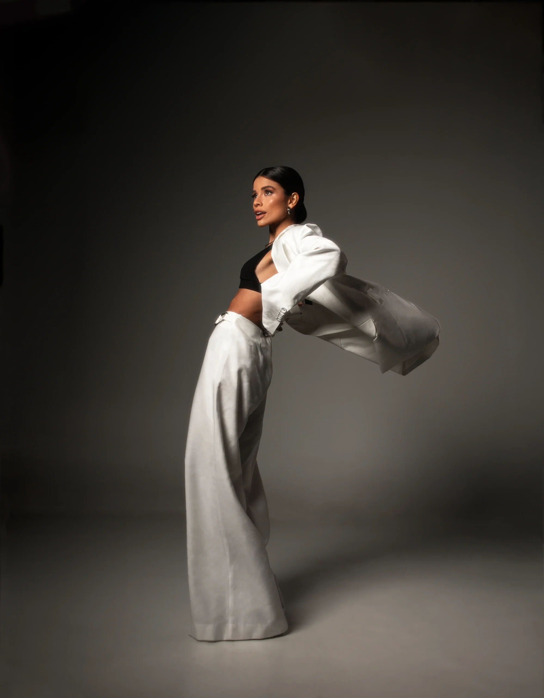

Está iniciando na fotografia
Quer aprender do zero com um método estruturado, sem pular etapas e sem perder tempo com informações soltas.
Workshop Online de Fotografia
Do planejamento ao ensaio finalizado — fotometria, iluminação, cores e tratamento. 125 aulas completas com mais de 60 horas de conteúdo.
Acesso imediato após confirmação do pagamento
▶ Assista à apresentação completa
Quem vai te ensinar
Fotógrafa especializada em ensaios fashion, estúdio e casamento. Com projetos pessoais e profissionais, já trabalhou em mais de 10 países — Estados Unidos, França, Reino Unido, Itália, República Dominicana, México, Grécia, Polônia, Chile e Argentina.
Absorvendo inspirações de diferentes culturas, desenvolveu um método próprio que une técnica, personalidade e resultado comercial. Agora compartilha esse processo completo para ajudar você a encontrar sua melhor versão na fotografia.
Identificação
Quer aprender do zero com um método estruturado, sem pular etapas e sem perder tempo com informações soltas.
Já faz fotos bonitas, mas não consegue precificar, captar clientes ou posicionar o trabalho de forma profissional.
Sente que não está evoluindo, compara demais com outros fotógrafos e perdeu a confiança no próprio trabalho.
A metodologia
Vou te ensinar a explorar a sua fotografia por completo. Do planejamento ao ensaio finalizado, passando por cada dimensão técnica e criativa.
Equipamentos, fotometria, modo manual, planejamento de ensaio e direção fotográfica para diferentes segmentos.
Iluminação de estúdio, equipamentos, fundos fotográficos e domínio da luz natural para qualquer ambiente.
Teoria das cores, definição da identidade visual e paleta pessoal que diferencia o seu trabalho no mercado.
Pós-produção profissional no Lightroom: do backup ao catálogo finalizado com a sua assinatura visual.
Grade curricular
20 módulos com 125 aulas completas e detalhadas que totalizam mais de 60 horas de conteúdo.
Resultados reais


"Consegui organizar ensaios completos com muito mais confiança. O método da Caroline estruturou tudo o que eu sabia de forma aleatória."
Jenniffer
"O módulo de iluminação mudou completamente a forma como eu trabalho em estúdio. Hoje tenho resultados que consigo repetir toda sessão."
Gabriela Garcia
"Finalmente entendi como cobrar pelo meu trabalho. O módulo de mercado e contratos valeu cada centavo do curso."
Samanta PistoriFotos de alunos do workshop

Investimento
ou R$ 1.997,00 à vista
Pagamento seguro via Hotmart. Acesso imediato.
Tempo suficiente para você entender se esse treinamento vai funcionar para você — dentro das suas expectativas e ambições. O cancelamento é simples: você manda um e-mail e recebe o dinheiro de volta, sem complicação.
Dúvidas frequentes
Para fotógrafos iniciantes que querem aprender com método, fotógrafos intermediários que querem profissionalizar a carreira, e qualquer pessoa que quer transformar a fotografia em fonte de renda.
Não. O curso ensina como trabalhar com o que você tem e como evoluir o equipamento de forma estratégica. O módulo de equipamentos aborda câmeras e lentes para todos os orçamentos.
O acesso é anual. Você pode assistir às aulas no seu próprio ritmo durante um ano completo, com possibilidade de renovação ao final do período.
Ao ingressar no workshop, você recebe acesso ao grupo exclusivo no Discord para expor suas ideias, tirar dúvidas, receber posicionamentos e principalmente compartilhar os trabalhos em andamento.
Sim. O workshop pode ser parcelado em até 12x de R$ 206,54 no cartão de crédito. O valor à vista é de R$ 1.997,00.
Você tem 7 dias de garantia incondicional. Se não ficar satisfeito, basta enviar um e-mail solicitando o reembolso e o valor será devolvido integralmente.
Junte-se aos alunos que já transformaram a carreira fotográfica com o método completo da Caroline Moschei.
Acesso imediato · Pagamento seguro · 7 dias de garantia